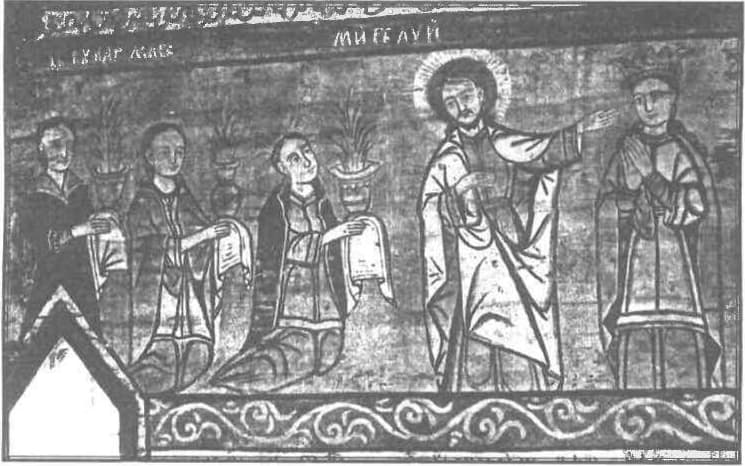

Întrebîndu-ne pentru începutul și rostul politicii, adică ale stăpînirii și povățuirii unora de către alții, găsim răspunsul luminat în Carte (căci nu degeaba și în zadar se numește simplu: „Biblos”), acolo unde se află deslușită în amănunt întreaga istorie a acestei lumi. Pentru ceea ce căutăm aici, ne vom lăsa călăuziți mai întîi de Fericitul Theodorit, episcopul Chirului, care zice așa:
„Nu Însuși Făcătorul a despărțit dintru început firea [omenească] spre a fi slugi și stăpîni, ceea ce vom arăta îndată. Vino așadar la însăși cea dintîi zidire a noastră, și vezi că un om s-a zidit din pămînt și o muiere, dar nu tot din pămînt: căci, luînd o coastă de la acela [de la Adam], așa a zidit Făcătorul neamul acesta [al oamenilor], ca femeia să nu se socotească de altă fire pentru deosebirea formei. Deci unul [bărbatul] s-a zidit din pămînt, și din bărbat muierea și dintru amîndoi toată firea oamenilor. Deci Făcătorul nu le-a împărțit unora a fi slugi, iar altora stăpîni dintru început, ci un neam al tuturor a zidit. Și, poruncindu-i lui Noe1 să facă corabie și dîndu-i mîntuirea ca plată a dreptății lui, [Făcătorul] a poruncit să intre în corabie el și muierea lui, împreună cu feciorii și cu muierile lor. Și nici o slugă n-a intrat, căci încă firea nu primise această despărțire. Ci roabe erau numai cele cu adevărat roabe, adică neamurile dobitoacelor, pe care [tocmai] pentru aceasta le-a adus întru această viață Făcătorul tuturor. Dar, de vreme ce [Dumnezeu] a văzut făcîndu-se întru cei de după acestea multă nerînduială dintru a nu fi stăpînire și toată nelegiuirea săvîrșindu-se fără de temere, [El] a despărțit neamul oamenilor întru stăpînitori și stăpîniți, ca temerea stăpînitorilor să micșoreze mulțimea păcatelor. Căci frica știe să înfrîneze pornirile patimilor celor necuvîntătoare [neraționale] și să tîmpească [să tocească] aplecarea sufletului către cele rele. Și frica i-a îndreptat de multe ori pe cei ce nu i-a folosit cuvîntul. Căci - de vreme ce firea a căzut către cel rău și mintea, împresurîndu-se de patimi și afundîndu-se ca o corabie necîrmuită, a lăsat trupul să se lupte fără de rînduială - de nevoie a avut trebuință de legi, ca de o ancoră ce face să stea corabia, și ține pornirea mergerii ei înainte și-l lasă pe cîrmaci să se scoale și să apuce cîrmele.
Dar nu era cu putință a se face punerea acestor legi dacă stăpînirea ar fi fost deopotrivă și petrecerea traiului deosebită. Căci - nici în cetățile întru care stăpînea norodul2, unde el avea puterea lucrurilor ce se făceau - nu se împărtășeau toți de cele deopotrivă: ci unii erau apărători ai legilor, iar alții legiuitori, iar alții voievozi, iar alții împlineau rînduiala celor supuși. Iar povățuitorul de norod îi stăpînea pe boieri și pe dregători. Și, în cetățile întru care stăpîneau cei puțini3, cei mulți împlineau numărul supușilor; iar celor puțini, care covîrșeau cu înțelepciunea și străluceau cu faptele cele bune, li se da să stăpînească lucrurile și stăpînirile cele de obște. […] Și povățuiau norodul precum li se părea lor că este bine.
Așadar păcatul a adus trebuința legilor, iar legile au avut trebuință de stăpînirile celor care le-au pus, și nu numai de ale celor care le-au pus, ci și de a celor care pot să-i pedepsească pe cei ce le calcă. Deci păcatul a adus nerînduiala, iar Stăpînul tuturor a pus peste nerînduială rînduiala și, cu legile, a înfrînat pornirea păcatului ca și cu un frîu, iar hățurile frîului acestuia le-a încredințat boierilor ca unor vizitii. De către acestea se împodobesc și cetățile, și orașele, și obștile. Pentru că cine ar fi suferit mîinile celor nedrepți, dacă frica legilor nu ar fi oprit pornirea văpăii lor celei lacome? Căci, precum peștii, cei mai mari i-ar fi mîncat pe cei mai mici, dacă legea nu ar fi arătat sabie ascuțită, și văpaie aprinsă și celelalte cîte s-au aflat spre pedeapsă de către stăpînitori asupra celor ce trăiesc întru răutăți” (în Despre dumnezeiasca pronie).
Să recitim acum ce poruncește pentru aceasta Dumnezeu, prin gura lui Pavel:
„Tot sufletul să se supună stăpînirilor celor covîrșitoare, căci nu este stăpînire fără numai de la Dumnezeu; iar cele ce sînt, de Dumnezeu sînt rînduite. De aceea, cel ce se împotrivește stăpînirii se împotrivește rînduielii lui Dumnezeu. Iar cei ce stau împotrivă vor fi judecați. Căci stăpînitorii nu sînt frică a faptelor celor bune, ci a celor rele. Voiești a nu te teme de stăpînire? Fă binele, și vei afla laudă de la dînsa. Căci ea este slugă a lui Dumnezeu spre binele tău. Iar de faci răul, teme-te, căci nu poartă sabia în zadar! Căci este slujitoare a lui Dumnezeu și răzbunătoare a mîniei Lui asupra celui ce face răul. De aceea, e nevoie a vă supune nu numai pentru urgie, ci și pentru conștiință. Căci pentru aceasta plătiți și dajdie. Căci sînt slujitori ai lui Dumnezeu, cu aceasta îndeletnicindu-se neîncetat” (Romani 13:1-6).
Locul acesta are neapărată trebuință să fie lămurit, și pentru aceasta ne vom folosi de tîlcuirile pe care Sfîntul Duh-Dumnezeu le-a insuflat sfinților lui Dumnezeu. Iată ce scrie pe marginea celor de mai sus Sfințitul Teofilact (în urma Sfîntului Ioan Gură de Aur):
„«Tot sufletul să se supună stăpînirilor celor covîrșitoare…»
Apostolul le zice acum Creștinilor și această poruncă, adică îi învață ca «tot sufletul» – ori preot, ori arhiereu, ori monah, ori apostol – nu doar să se plece, ci să se supună stăpînitorilor și începătorilor din afară [dregătorilor, căpeteniilor lumești], fiindcă această supunere nu răstoarnă buna cinstire de Dumnezeu și credința. Apostolul poruncește însă aceasta ca să arate că evanghelia [bunăvestirea] lui Hristos nu învață răzvrătirea și nesupunerea către stăpînitori, ci chiar buna-cunoștință și buna-supunere către dînșii.
«căci nu este stăpînire fără numai de la Dumnezeu; iar cele ce sînt, de Dumnezeu sînt rînduite.»
Ce spui – o Fericite Pavele? Fiecare începător și stăpînitor s-a hirotonisit de Dumnezeu? Nu zic aceasta – ne răspunde dumnezeiescul Pavel – nici nu vorbesc pentru fiecare începător în parte, ci de obște pentru lucrul stăpînirii și al începătoriei. Căci faptul de a fi stăpînie și începătorie în lume – adică unii a fi începători și a stăpîni, iar alții a fi povățuiți și stăpîniți, încît a nu se face necuviință și a nu fi lucrurile cu susul în jos și tulburate – acesta este lucrarea înțelepciunii și proniei lui Dumnezeu. De aceea, Pavel nu a zis că «nu este începător și stăpînitor fără numai de la Dumnezeu», ci a zis că «nu este stăpînire». Astfel, Pavel vorbește aici pentru lucrul acesta osebit al începătoriei, ca și Parimistul, cînd zice că «de la Domnul se potrivește femeia bărbatului» (Pilde 19:14). El nu zice că Dumnezeu îi împreunează pe bărbați cu muierile – fiindcă, dacă ar fi așa, ar însemna că-i împreunează și pe cei ce se împreună cu curvie, cu prea-curvie și cu alte fapte neiertate – ci zice că Dumnezeu a făcut nunta, punînd oamenilor această lege de la început, de a fi bărbat și femeie, precum zicea și Domnul în Evanghelie: «(…) Cel ce i-a făcut din început, bărbat și femeie i-a făcut» (Matei 19:4). Deci toate stăpînirile sînt rînduite de la Dumnezeu cu dreptate, orice fel de stăpînire ai socoti: stăpînirea părintelui asupra fiului său, stăpînirea bărbatului asupra femeii sale, a dascălului asupra ucenicului său și a stăpînului asupra șerbului său; ori stăpînirea care se află la vietăți, la cele cu cîte patru picioare, la cele zburătoare, la pești și la cele ce se numesc entoma (insecte), precum la albine. Pentru că neîncepătoria și nestăpînirea este pretutindeni lucru rău și princinuitor de tulburare.
«De aceea, cel ce se împotrivește stăpînirii se împotrivește rînduielii lui Dumnezeu. Iar cei ce stau împotrivă vor fi judecați.»
Pentru a nu putea Creștinii să zică: O Fericite Pavele! – ne micșorezi și ne defaimi pe noi, care avem să dobîndim împărăția Cerurilor, fiindcă ne supui sub începători și stăpînitori lumești – Apostolul arată aici că cel ce se supune stăpînirilor și începătoriilor se supune lui Dumnezeu Însuși. Și zice un cuvînt chiar mai înfricoșat, anume că cel ce nu se supune stăpînirilor stă împotrivă și nu se supune lui Dumnezeu Însuși, Celui ce a așezat și a rînduit stăpînirile acestea. Iar acela ce stă împotriva lui Dumnezeu va fi pedepsit și de Dumnezeu, și de oameni, adică de înșiși stăpînitorii împotriva cărora stă; căci aceasta arată zicînd că «cei ce se împotrivesc își vor lua judecata».
«Căci stăpînitorii nu sînt frică a faptelor celor bune, ci a celor rele. Voiești a nu te teme de stăpînire? Fă binele, și vei afla laudă de la dînsa.»
Zice: Creștine, te temi și te cutremuri de stăpînitori ca nu cumva să te pedepsească? Atunci cînd faci binele, nu! Ori nu cumva te înfricoșează cînd porți grijă de fapta bună? Ba! Ci, de vei face binele și fapta bună, dregătorul te va lăuda mai mult decît ceilalți oameni. Și nu numai că nu te oprește a face binele, ci încă te și ajută la aceasta. Deci, cînd îl ai lăudător și ajutător al tău pe stăpînitor, pentru ce nu i te supui?
«Căci ea este slugă a lui Dumnezeu spre binele tău.»
Zice: Stăpînitorul lucrează împreună cu voia lui Dumnezeu. De pildă, Dumnezeu îți poruncește prin Evanghelie să fii întreg-înțelept [curat, feciorelnic cu cugetul], iar stăpînitorul poruncește prin lege la fel4. Dumnezeu îți poruncește a nu te lăcomi la averi, nici a răpi lucrul străin; același lucru îți poruncește și stăpînitorul, și pentru aceasta șade și te judecă. Astfel, stăpînitorul ni se face împreună-lucrător și ajutător către fapta bună, dacă vom lua aminte și ne vom supune lui. Pentru aceasta zice Solomon: «Plăcute sînt împăratului buzele drepte!» (Pilde 16:13).
«Iar de faci răul, teme-te, căci nu poartă sabia în zadar!»
Zice: Iar dacă tu, Creștine, faci răul, atunci trebuie să te temi de stăpînire, căci – după Parimistul – «urîciune e împăratului acela care face rele» (Pilde 16:12). Încît nu stăpînirea pricinuiește frică, ci răutatea noastră, din pricina căreia se abate asupra noastră sabia stăpînirii, adică puterea sa pedepsitoare. Căci dregătorul și stăpînitorul nu este încins cu sabie în zadar, ci pentru ca să pedepsească pe cei vicleni și răi, fiind într-armat ca un ostaș înfricoșat și stînd asupra acelora care greșesc și păcătuiesc.
«Căci este slujitoare a lui Dumnezeu și răzbunătoare a mîniei Lui asupra celui ce face răul.»
Stăpînirea – zice – plinește voia lui Dumnezeu și atunci cînd laudă și cinstește fapta bună, și atunci cînd întrebuințează sabia și puterea pedepsitoare. Căci, pedepsind răutatea, ea apără fapta bună și face slujba lui Dumnezeu. Fiindcă cei mai mulți oameni de rînd nu fac binele și fapta bună din frică de Dumnezeu, cît de frica stăpînitorilor. De aceea, stăpînitorul – fiindcă răzbună și apără pe cel îmbunătățit și fapta bună, și pedepsește pe cei răi și răutatea – cu dreptate se numește și este slujitor și slugă a lui Dumnezeu.
«De aceea, e nevoie a vă supune nu numai pentru urgie, ci și pentru conștiință.»
Creștinii – zice – trebuie a se supune stăpînitorilor nu numai pentru a nu cerca atît urgia și pedeapsa lui Dumnezeu, cît și a stăpînitorilor înșiși rînduiți de El, fiind pedepsiți cu certări nesuferite, ci trebuie a se supune lor și pentru a nu arăta că sînt oameni fără conștiință și nemulțumitori pentru facerile lor de bine. Căci stăpînitorii fac mult bine cetăților, satelor și locurilor în care se află, întărind și rînduind viața oamenilor. Fiindcă, dacă nu ar fi fost stăpînitorii în lume, negreșit toate s-ar fi pierdut, toată pacea s-ar fi ridicat și toată iconomia și buna rînduială politică s-ar fi stricat, pentru că cei mai puternici ar fi înghițit pe cei mai slabi5. Deci și conștiința ta, Creștine, să te plece a-i cinsti pe stăpînitori, care îți dăruiesc aceste bunătăți, și să te supui lor, chiar dacă frica de pedeapsa stăpînitorilor nu te-a înduplecat a face aceasta.
«Căci pentru aceasta plătiți și dajdie.»
Zice: Tu însuți, Creștine, mărturisești și adeverezi cu fapta că stăpînitorii îți fac bine, fiindcă dajdia și birul pe care le dai lor sînt plata acestor faceri de bine. Căci este arătat că tu dai dajdia și birul stăpînitorului pentru că și el priveghează și poartă grijă pentru paza și pacea ta. Căci oamenii nu s-ar fi înduplecat niciodată să plătească dajdii stăpînitorilor, dacă nu ar fi cunoscut că ei înșiși cîștigă și li se face bine din purtarea de grijă a acestora, ei dormind fără de grijă, iar dregătorii și stăpînitorii priveghind pentru paza lor. Și vezi – o cititorule! – înțelepciunea marelui Pavel, pentru că el arată că dajdiile și birurile, care sînt din fire îngreuietoare și supărătoare pentru supuși, e drept a se da stăpînitorilor, ca niște recunoașteri ale purtării de grijă și a facerii de bine din partea lor; și, prin urmare, Apostolul a dovedit din aceasta că dajdiile și birurile sînt ușoare și pricinuitoare de bucurie.
«Căci sînt slujitori ai lui Dumnezeu, cu aceasta îndeletnicindu-se neîncetat.»

De aceea – zice – și lui Dumnezeu Îi e plăcut lucrul acesta, a da Creștinii dajdii și dări stăpînitorilor, pentru că ei sînt slujitori ai Lui. Căci Dumnezeu voiește ca în lume să se afle pacea și fapta bună și să se curme războaiele și toată răutatea, și la această voie a Lui sînt rînduiți ca slujitori și lucrători stăpînitorii, care ostenesc întru obșteasca așezare a oamenilor și luptă pentru pacea obștească. Și cu aceasta se îndeletnicesc, stăruind, pentru ca noi, supușii, să petrecem fără tulburare și în liniște. De aceea, același Pavel poruncește și în altă parte nu numai să ne supunem împăraților și stăpînitorilor, ci să ne și rugăm pentru dînșii. Pentru ce folos? Pentru ca și noi, supușii, să petrecem viață pașnică și liniștită, căci zice: «(…) ca să petrecem viață pașnică și liniștită întru toată cucernicia și buna-cinstire de Dumnezeu» (1 Timotei 2:2). Iar dacă vreun stăpînitor folosește rău stăpînirea dată lui de la Dumnezeu, aceasta nu pricinuiește nici o vinovăție stăpînirii și celor bune, pentru că vinovăția nu cade asupra stăpînirii, ci asupra aceluia ce are stăpînirea” (în tîlcuirea epistolelor lui Pavel).
Și iată ce zice în notele acestor tîlcuiri editorul lor, Sfîntul Nicodim Aghioritul, el însuși un cărturar purtător de Duh Sfînt, care a trăit aproape de vremile noastre democratic-antihristice (acum două veacuri):
„Opt pricini numără aici Pavel pentru care se cuvine a se supune Creștinii stăpînirilor: 1) fiindcă este poruncă a lui Dumnezeu; 2) fiindcă începătorii (ori dregătorii) și stăpînitorii sînt slujitori ai lui Dumnezeu; 3) fiindcă pedepsesc răutatea cu sabia; 4) fiindcă se cuvine a ne supune lor pentru ascultare; 5) fiindcă Dumnezeu osîndește pe cei ce nu ascultă de stăpînitori; 6) fiindcă pentru aceasta se dau stăpînitorilor dajdii; 7) fiindcă însușirea Creștinului este a cinsti pe cei mai mari; 8) fiindcă se cuvine a ne supune lor pentru pacea obștească (la Coresi). Pentru aceasta zice și Petru: «Supuneți-vă, pentru Domnul, orînduirii omenești, fie împăratului, ca înalt stăpînitor, fie domnilor, ca unora ce sînt trimiși de el asupra făcătorilor de rele spre pedeapsă, iar pentru făcătorii de bine spre laudă; că așa este voia lui Dumnezeu» (1 Petru 2:13).
Dar se cuvine să luăm aminte că – atunci cînd se întîmplă ca vreun stăpînitor din afară, de altă credință, să ne silească să ne lepădăm de credința noastră ori să călcăm vreo poruncă a lui Dumnezeu – atunci așadar se cuvine a nu ne supune lui, ci să ne împotrivim pînă la moarte, aducîndu-ne aminte de cuvîntul Apostolilor pe care l-a zis către începătorii Iudeilor: «Se cuvine a ne supune mai mult lui Dumnezeu decît oamenilor» (Faptele Apostolilor 5:29), și de cuvîntul lui David: «Și grăiam întru mărturiile Tale înaintea împăraților, și nu mă rușinam» (Psalm 118). Iar înțeleptul Teodorit, tîlcuind această zicere, arată că «stăpînirea nedrepților nu e hirotonie a lui Dumnezeu, ci iconomie a Lui». Căci Dumnezeu, fiind blînd, dă stăpînitori care să cinstească dreptatea, după cum zice: «Vă voi da păstori după inima Mea, care vă vor păstori cu știință și pricepere» (Irimia 3:15); și iarăși: «Voi întoarce judecătorii tăi și stăpînitorii tăi să judece ca la început, și după acestea te vei chema cetate a dreptății, mitropolie credincioasă, Sion» (Isaia 1:26). Vrînd însă a-i pedepsi pe cei ce greșesc, Dumnezeu îngăduie a fi stăpîniți și de dregători răi, căci zice: «Și batjocoritori îi vor stăpîni pe ei» (Isaia 3:4). Și iarăși zice Isaia: «Stăpînitorii tăi nu se supun și sînt părtași ai furilor, iubind daruri, căutînd răsplătire» (Isaia 1:23). Și Iezechil zice: «Dregătorii ei în mijlocul ei, răpind ca niște cîini, sufletele mîncînd întru silnicie» (Iezechil 22:27). Și Sofonie zice: «Dregătorii ei sînt într-însa ca niște lei răcnind, judecătorii ei ca niște lupi de Arabia care nu mai lasă pe a doua zi» (Sofonie 3:3). […]
Vrednic de luare aminte – urmează Sfîntul Nicodim – este pentru ce Pavel zice că începătorul (iar nu începătoria) este slujitor al lui Dumnezeu și celelalte asemenea. Spre dezlegarea nedumeririi, se poate spune că nu numai stăpînirea și începătoria sînt rînduite de Dumnezeu, adică după înainte-povățuitoarea voie a lui Dumnezeu, ci și fiecare stăpînitor și dregător. Dar care dregător și stăpînitor? Acela ce are stăpînirea și dregătoria după lege, cel adevărat, cel vrednic de începătorie și dregătorie, iar nu cel ce e tiran, căci așa se dă de la Dumnezeu oamenilor după înainte-povățuitoarea voie a Lui, după cum s-a și zis că «inima împăratului este în mîna lui Dumnezeu» (Pilde 21:1).
Căci – după marele Vasilie – împărăția este o epistasie (adică stare asupră sau zapciuire) legiuită. Și, iarăși, același Vasilie – tîlcuind această zicere a lui Isaia: «Haină ai, fii începător al nostru!» (capitolul 3:6) – hotărăște care este adevăratul începător, zicînd: «Adevăratul începător nu se cunoaște din semnele din afară – cum sînt porfira, hlamida și coroana – ci dintru a avea faptă bună începătorească. Căci, cel ce e stăpînit de îndulciri și purtat de felurite pofte, fiind rob al păcatului, este neiscusit către a stăpîni. Iar împărații și stăpînitorii care nu sînt legiuiți, curați și adevărați, nu sînt dați de către Dumnezeu (adică după povățuitoarea voie a lui Dumnezeu) decît după al doilea chip, adică după îngăduință. Aceștia nu sînt vrednici a se numi nici împărați, nici stăpînitori, ci numai tirani, gonaci și potrivnici, precum dumnezeiasca Scriptură îl numește satană, adică potrivnic, pe Ader, împăratul Siriei, al Damascului. Iar dacă cineva ar voi să spună că Solomon zice din partea lui Dumnezeu că „prin Mine împărățesc împărații, și cei puternici scriu dreptatea (…) și prin Mine stăpînesc pămîntul tiranii” (Pilde 8:15, 16), răspundem către aceasta cu Sfîntul Grigorie al Nissei, că prin „împărați” se înțeleg cei săraci cu duhul, cei ce se învrednicesc de veșnica împărăție, precum a zis Domnul: „Fericiți – cei săraci cu duhul, că a lor este împărăția cerurilor”; iar „puternici” sau „silnici” sînt numiți cei ce silnicesc împotriva patimilor și nu se fac robi păcatului; de asemenea, prin „tirani” se înțeleg cei ce luptă împotriva democrației patimilor, prefăcînd-o în monarhie. Căci toți aceștia se învrednicesc a se face astfel cu ajutorul adevăratei înțelepciuni a lui Dumnezeu» (în Cuvîntul al treilea asupra lui Evnomie).”
Iar noi ce mai putem adăuga la acestea? Că tirania democratică, sub care trăim (în România) de un veac și jumătate, este anarhică (anarhos = fără principiu, fără rînduială), adică este împotriva firii. Iar fiind împotriva firii și a rînduielii puse de Ziditorul a toate, înseamnă că are obîrșii satanice, „Satana” însemnînd chiar „Împotrivitorul”. Apoi, fiind satanică, tirania democratică este și mincinoasă: demosul nu stăpînește nimic, fiind numai o turmă de robi ce se mîngîie nălucind că o dată la cîțiva ani își pot arăta „suveranitatea” scriind un X pe o bucată de hîrtie. Iar deasupra lor, ținînd frîiele și biciul, se află cei mai cumpliți tirani ai tuturor timpurilor - care fac pacea sau războiul globale, care aduc belșugul sau foametea globale, viața sau moartea globale – marii slujitori ai Satanei, ce lucrează în chip nemijlocit împreună cu acesta. Și, asupra tuturor, stau cele mai înfricoșate patimi, care stăpînesc omenirea mai abitir decît oricînd în trecut, fiindcă sînt legiuite. Iar acesta e un mare semn al apropiatei împărății a Antihristului și a sfîrșitului acestei lumi. Ceea ce nu e lucru de tristețe (deși e dureros), ci mai ales de bucurie: fiindcă, odată cu această lume, va înceta și răul și Hristos-Dumnezeu va împărăți împreună cu drepții Săi în veci. Încît politica noastră trebuie să fie acum, mai mult decît oricînd, aceea de a ne chivernisi sufletele în chip înțelept, cu nădejdea unui răspuns bun la Judecata ce e tot mai aproape.
Note
1 Noe a fost un fel de al doilea Adam, fiindcă din el ne tragem toți după Potop.
2 Demosul; e vorba de democrația elinească, Sfințitul Theodorit scriind în veacul al IV-lea.
3 Oligarhii; aceștia erau cetățeni din tată în fiu și stîlpi pe care se sprijinea întreaga cetate.
4 Într-adevăr, deși pare de necrezut, a fost o vreme cînd însăși legea civilă pedepsea curvia, în loc de a o încuraja prin legi, precum face astăzi.
5 Aceste lucruri se petrec întocmai în democrație, care nu e un sistem de conducere, ci o anarhie bine gîndită, un necurmat război civil, nimicitor pentru toate națiile, chiar dacă nu se arată sîngeros decît în anumite răstimpuri.
Comentarii